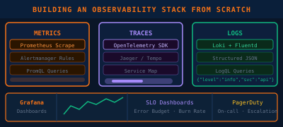

How to Run a Winning Technical Discovery Session
How I structure technical discovery calls to uncover real requirements, qualify opportunities, and set up the solution design phase for success.
Read MoreSolutions Architecture, AI integration, and pre-sales strategy from the field

How I structure technical discovery calls to uncover real requirements, qualify opportunities, and set up the solution design phase for success.
Read More
A practical guide to the most common enterprise AI integration patterns — RAG, fine-tuning, agentic workflows — and when to use each one.
Read More
The exact framework I use to scope, build, and present technical POCs that convert to pipeline — from whiteboard to working demo.
Read More
How to use the 6 pillars not as a compliance exercise, but as a living design tool that drives real trade-off conversations with stakeholders.
Read More
A practical walkthrough of how I apply Rehost, Replatform, Refactor, Repurchase, Retire, and Retain strategies to real-world enterprise workloads.
Read More
The questions, trade-offs, and TCO considerations I use when a customer asks whether to go all-in on AWS or hedge across multiple cloud providers.
Read More